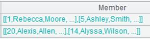

Description:
Create a channel and push data in another channel into it.
Syntax:
|
channel(ch) |
Note:
The function creates a channel, pushes data in channel ch into it, and returns a channel. This is equivalent to ch.push(channel()).
Parameters:
|
ch |
A channel |
Return value:
A channel
Example:
|
|
A |
|
|
1 |
=demo.cursor("select * from SCORES where CLASS = 'Class one'") |
|
|
2 |
=channel() |
Create a channel |
|
3 |
=channel(A2) |
Create a channel and be ready to push data in A2¡¯s channel into the new channel, which is equivalent to =A2.push(channel()) |
|
4 |
>A2.select(STUDENTID==1) |
Attach a computation to A2¡¯s channel to select records where STUDENTID is 1 |
|
5 |
>A3.select(STUDENTID==2) |
Attach a computation to A3¡¯s channel to select records where STUDENTID is 2 |
|
6 |
=A2.fetch() |
Keep the current data in A2¡¯s channel |
|
7 |
=A3.fetch() |
Keep the current data in A3¡¯s channel |
|
8 |
=A1.push(A2) |
Ready to push A1¡¯s cursor into Channel A2 |
|
9 |
=A1.fetch() |
Perform the push action defined in A8 when data is fetched from the cursor |
|
10 |
=A2.result() |
Get data from channel A2
|
|
11 |
=A3.result() |
Get data from channel A3  |